Passe la souris surTouche les termes soulignés en bleu pour afficher leur définition.
Qu'est-ce qu'un design pattern ?
Un design pattern (patron de conception) est une solution éprouvée à un
problème récurrent de conception logicielle. Il ne s'agit pas de code
prêt à l'emploi mais d'une façon de structurer les classes et leurs relations, réutilisable dans de nombreux projets.
1. Fabrique (Factory)
Définition :La Fabrique permet d'avoir une classe qui lors de l'instanciation de l'objet choisira l'une des sous-classes possibles avec des méthodes implementées différemment en fonction des paramètres de l'objet
Exemple en Kotlin
abstract class Animal(val nom: String) {
abstract fun crier(): String
companion object {
fun fabrique(type: String, nom: String): Animal = when (type) {
"chien" -> Chien(nom)
"chat" -> Chat(nom)
else -> throw IllegalArgumentException("Type inconnu : $type")
}
}
}
class Chien(nom: String) : Animal(nom) {
override fun crier(): String = "$nom dit : Ouaf !"
}
class Chat(nom: String) : Animal(nom) {
override fun crier(): String = "$nom dit : Miaou !"
}
val animal = Animal.fabrique("chien", "Rogue")
println(animal.crier()) // Affiche : Rogue dit : Ouaf !
Diagramme UML
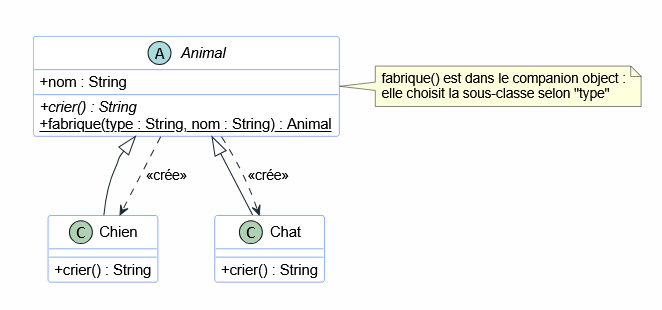
2. Singleton
Définition : Il n'existe qu'une seule et unique instance (un seul objet) de la classe dans tout le programme.
Exemple en Kotlin
class SingletonPattern private constructor() {
companion object {
// Créée une seule fois, au premier accès
val INSTANCE: SingletonPattern by lazy { SingletonPattern() }
}
}
val a = SingletonPattern.INSTANCE
val b = SingletonPattern.INSTANCE // a et b désignent le même objet
Diagramme UML
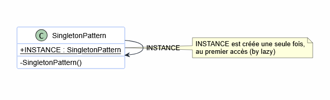
3. DAO (Data Access Object)
Définition : Le dao est une classe qui se connecte à la base de données et qui implémente les opérations pour lire, ajouter, modifier ou supprimer les données
Exemple en Kotlin
interface ProduitDAO {
fun donneTous(): List<Produit>
fun donne(nom: String): Produit?
}
class ProduitJsonDAO(private val fichier: File) : ProduitDAO {
override fun donneTous(): List<Produit> =
Json.decodeFromStream<List<Produit>>(fichier.inputStream())
override fun donne(nom: String): Produit? =
donneTous().find { it.nom == nom }
}
Diagramme UML
4. Patron de méthode (Template method)
Définition : La classe mère définit le squelette d'un
algorithme dans une méthode final (non redéfinissable). Les étapes qui varient sont déclarées
abstraites et implémentées par les sous-classes.
Exemple en Kotlin
abstract class TvaCalcul {
private val montants = mutableListOf<Double>()
// Étape spécifique à chaque sous-classe
abstract val taux: Double
fun ajouter(montantHT: Double) { montants.add(montantHT) }
// Squelette de l'algorithme (final par défaut en Kotlin)
fun montantTotalTTC(): Double {
var total = 0.0
for (m in montants) total += m
return total * (1 + taux)
}
}
class TvaReduite : TvaCalcul() { override val taux = 0.055 }
class TvaNormale : TvaCalcul() { override val taux = 0.20 }
Diagramme UML
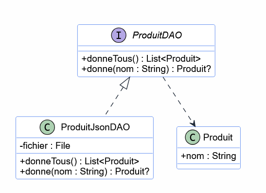
5. Stratégie (Strategy)
Définition : La stratégie définit une famille d'algorithmes
interchangeables, chacun derrière la même interface. Le client choisit
l'algorithme à utiliser au moment de l'exécution.
Exemple en Kotlin
interface Calcul { fun calculer(notes: List<Double>): Double }
class Moyenne : Calcul { override fun calculer(notes: List<Double>) = notes.average() }
class Maximum : Calcul { override fun calculer(notes: List<Double>) = notes.max() }
class Etudiant(private val notes: List<Double>) {
fun afficherNote(strategie: Calcul) = println(strategie.calculer(notes))
}
val etudiant = Etudiant(listOf(12.0, 8.0, 15.0))
etudiant.afficherNote(Moyenne()) // 11.67
etudiant.afficherNote(Maximum()) // 15.0
Diagramme UML
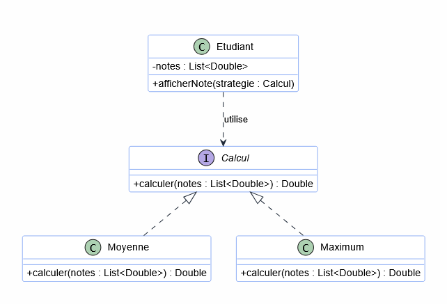
6. Itérateur (Iterator)
Définition : L'itérateur permet de parcourir une collection séquentiellement
sans exposer sa structure interne. En Kotlin, toutes les collections standard implémentent
Iterable.
Exemple en Kotlin
val profs = mutableListOf("Arnaud", "JFB", "JM")
val ite = profs.iterator()
while (ite.hasNext()) {
val prof = ite.next()
if (prof == "JFB") ite.remove() // modification sûre pendant le parcours
println(prof)
}
Diagramme UML
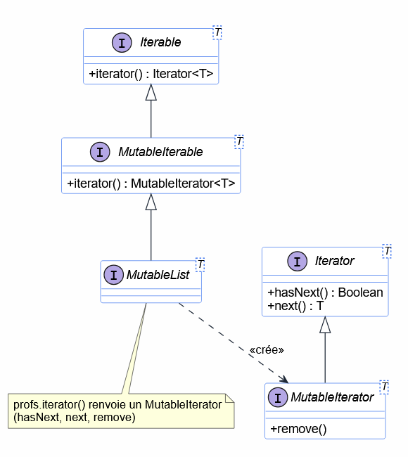
7. Observateur (Observer)
Définition : Un objet observable prévient automatiquement une liste d'observateurs
chaque fois que son état change. Les observateurs ne se connaissent pas entre eux.
Exemple en Kotlin
class Bouton {
private val ecouteurs = mutableListOf<(String) -> Unit>()
fun ajouterEcouteur(ecouteur: (String) -> Unit) { ecouteurs.add(ecouteur) }
fun clic() { ecouteurs.forEach { it("Bouton cliqué") } }
}
val bouton = Bouton()
bouton.ajouterEcouteur { println("Affiche : $it") }
bouton.ajouterEcouteur { println("Journal : $it") }
bouton.clic()
Diagramme UML
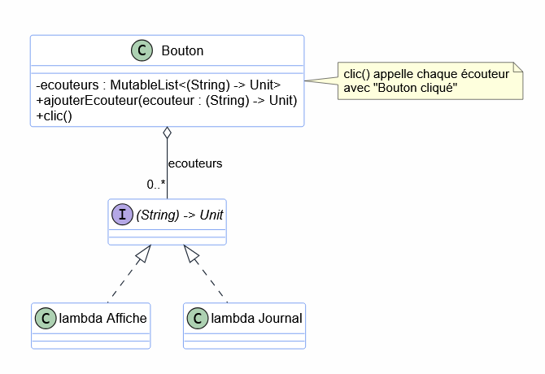
8. Composite
Définition : Le composite représente une structure arborescente.
Les éléments simples (feuilles) et les conteneurs implémentent la même interface, donc le client les traite de la même façon.
Exemple en Kotlin
interface Composant { fun executer() }
class Feuille(val nom: String) : Composant {
override fun executer() = println("Exécute $nom")
}
class Conteneur : Composant {
private val enfants = mutableListOf<Composant>()
fun ajouter(c: Composant) { enfants.add(c) }
override fun executer() = enfants.forEach { it.executer() }
}
val groupe = Conteneur().apply {
ajouter(Feuille("Chargeur"))
ajouter(Feuille("Écouteurs"))
}
groupe.executer() // exécute tous les composants, sans distinction
Diagramme UML
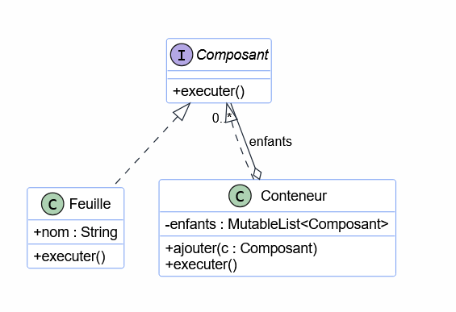
9. Délégation (Delegate)
Définition : Une classe A confie certains traitements à un objet B qu'elle contient en
attribut, au lieu d'hériter de B. On parle aussi de
composition. Kotlin l'implémente directement avec le mot-clé by.
Exemple en Kotlin
interface Appelable { fun appeler(num: String) }
class Gsm : Appelable {
override fun appeler(num: String) = println("Appel vers $num")
}
// Smartphone délègue les appels à l'objet gsm
class Smartphone(gsm: Gsm) : Appelable by gsm {
fun naviguer(url: String) = println("Go to $url")
}
Smartphone(Gsm()).appeler("0600000000")
Diagramme UML
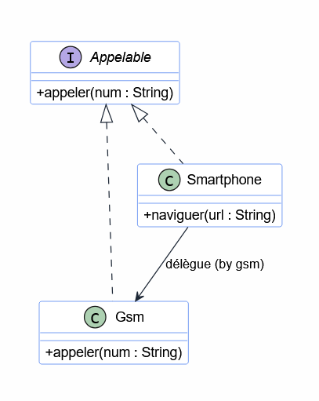
10. Adaptateur (Adapter)
Définition : L'adaptateur expose l'interface attendue par le client,
tout en utilisant en interne une classe dont l'interface est différente. Il permet de continuer à utiliser une
bibliothèque modifiée sans toucher au reste du programme.
Exemple en Kotlin
// Interface attendue par le client
interface IA { fun methA() }
// Nouvelle version de la bibliothèque, à l'interface différente
class LibAA2 { fun methA2() = println("Nouvelle méthode") }
// L'adaptateur implémente l'ancienne interface et délègue à la nouvelle
class Adaptateur(private val lib: LibAA2) : IA {
override fun methA() = lib.methA2()
}
val client: IA = Adaptateur(LibAA2())
client.methA()
Diagramme UML
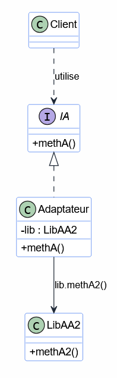
11. Entrepôt de données (Repository)
Définition : Le repository stocke les objets d'un type donné et offre les opérations nécessaires à la
couche métier, sans révéler comment les données sont stockées. Il se distingue du DAO par son
niveau d'abstraction : il manipule des objets, pas la persistance.
Exemple en Kotlin
data class Personne(val nom: String, val age: Int)
class EntrepotDePersonnes(init: List<Personne>) {
// Stockage privé, modifiable uniquement par le repository
private val _personnes: MutableList<Personne> = init.toMutableList()
// Accès en lecture seule depuis l'extérieur
val personnes: List<Personne> get() = _personnes
fun ajouter(p: Personne) { _personnes.add(p) }
fun supprimer(p: Personne) { _personnes.remove(p) }
fun plusJeunes(age: Int): List<Personne> = _personnes.filter { it.age <= age }
}
Diagramme UML
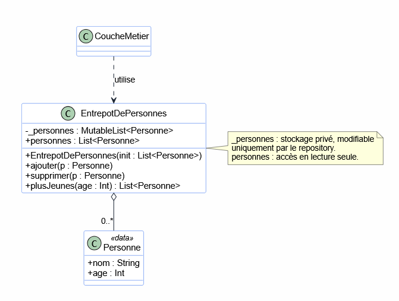
12. Modèle-Vue-Contrôleur (MVC)
Définition : MVC est un patron d'architecture qui sépare
les responsabilités : le modèle contient les données et les règles métier, la vue
affiche les données, et le contrôleur traite les actions de l'utilisateur et met à jour le modèle.
Exemple en Kotlin
class Modele { var valeur = 0 }
class Vue { fun afficher(v: Int) = println("Valeur : $v") }
class Controleur(private val modele: Modele, private val vue: Vue) {
fun incrementer() {
modele.valeur++
vue.afficher(modele.valeur)
}
}
Controleur(Modele(), Vue()).incrementer()
Diagramme UML
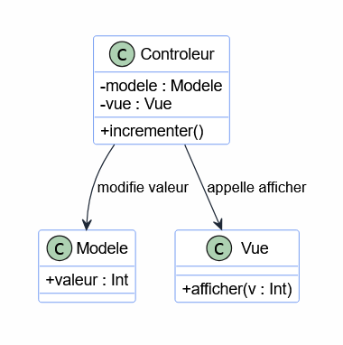
Design patterns combinés dans les TP
Dans les TP, plusieurs patterns sont utilisés ensemble. Pour chaque cas : les patterns en jeu, le rôle de chaque classe
et le diagramme UML.
Cas
Patterns combinés
Salaires (TP5)
Composite + Délégation
Spatioport (TP5)
Singleton + Entrepôt
NetPrime (TP6)
DAO + Entrepôt
Fruits (TP8)
DAO + classe mère commune + Entrepôt
Tarifs de vols (TP7)
Fabrique + Composite + Stratégie
Cocktails (TP7)
Composite
Pâques (TP2)
Fabrique + classe abstraite
Tables de hachage (TP9)
Classe abstraite + Stratégie + Itérateur + composition
Files (TP1)
Itérateur + implémentations interchangeables
Composite + Délégation : les salaires (TP5, exercice 1)
Patterns : Composite et Délégation, combinés.
Composite :Employe et Departement forment un composite : un département contient des employés ou d'autres départements.
Délégation :Departement délègue à une MutableList l'implémentation de l'interface Ajoutable.
Délégation :Entreprise délègue à Departement les interfaces Salariable et Ajoutable, avec le mot-clé by.
Diagramme UML
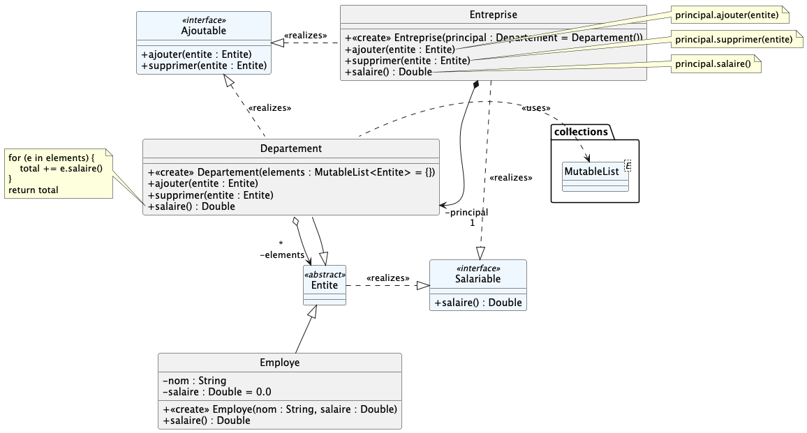
Singleton + Entrepôt : le spatioport (TP5, exercice 2)
Patterns : Singleton et Entrepôt de données (Repository), combinés.
Singleton :LIBRE et INUTILISABLE sont des singletons Kotlin (object).
Entrepôt :Spatioport stocke les vaisseaux dans un Dock interne sans le divulguer ; ses méthodes métier sont celles de UsageSpatioport.
Combinaison : un emplacement du dock contient soit un Vaisseau, soit l'un des deux singletons.
Diagramme UML
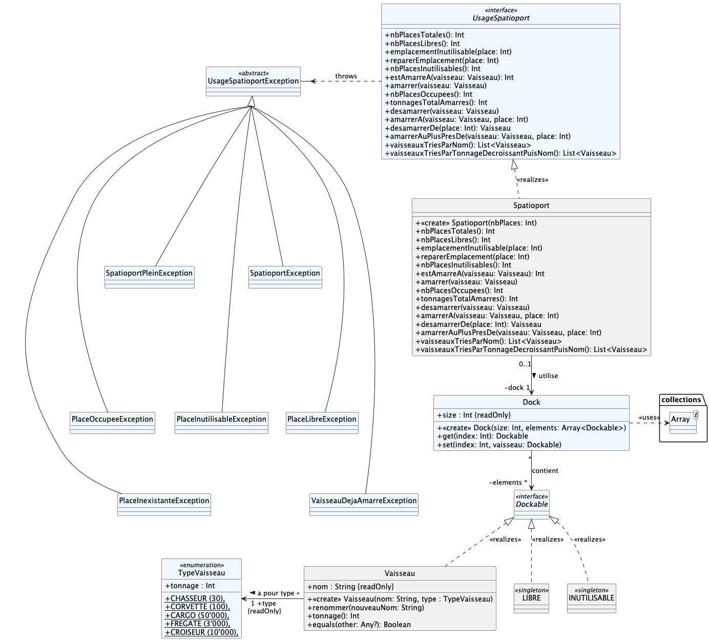
DAO + Entrepôt : NetPrime (TP6)
Patterns : DAO et Entrepôt de données (Repository), combinés.
DAO :UserDAO et MediaDAO (interfaces iUserDAO et iMediaDAO) lisent les fichiers JSON ; RandomUserDAO est une autre source d'utilisateurs (API RandomUser).
Entrepôt :NetPrime réalise iUserRepository et iMediaRepository : méthodes de haut niveau (filtres, tris) pour les besoins métier.
Combinaison :NetPrime s'appuie sur les interfaces DAO, donc on peut changer la source des données sans modifier l'entrepôt.
Diagramme UML
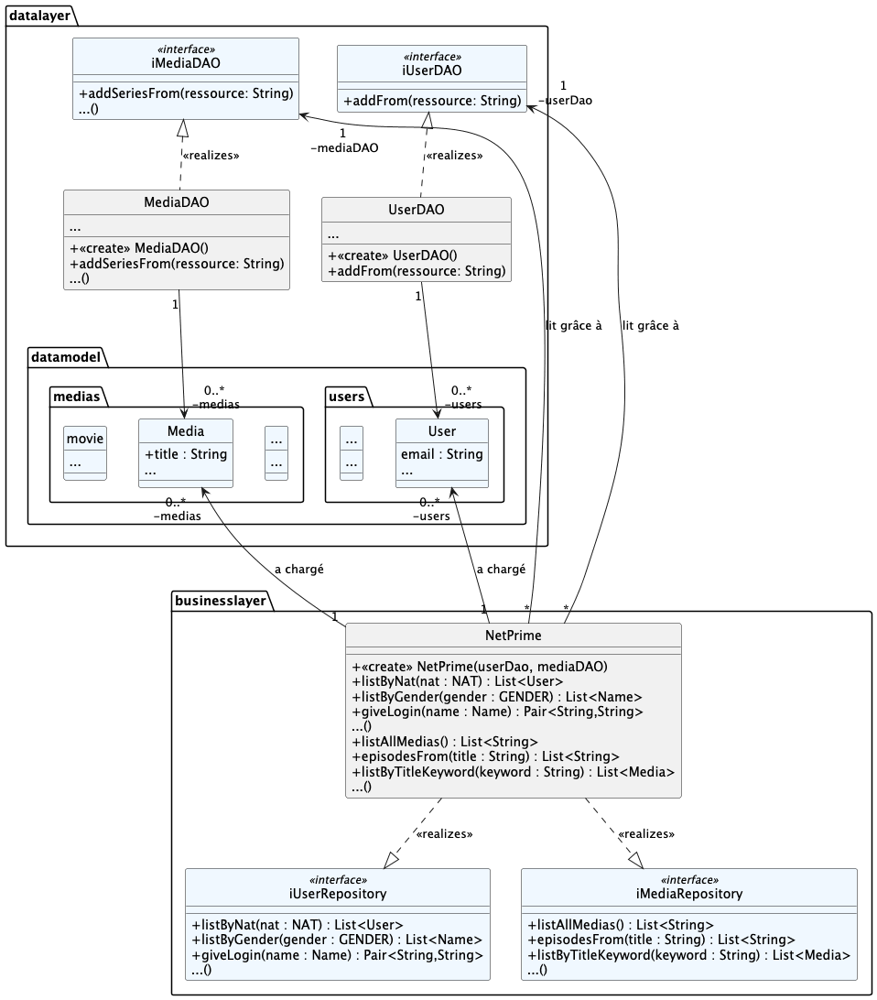
DAO + classe mère commune + Entrepôt : les fruits (TP8)
Patterns : DAO, classe mère commune et Entrepôt de données (Repository), combinés.
DAO :FruitDAO est réalisé par FruitJsonDAO, FruitCsvDAO, FruitH2DAO, FruitSqliteDAO et FruitMariaDbDAO ; un DAO ne stocke pas de liste, c'est un intermédiaire.
Classe mère commune :FruitDatabaseDAO regroupe le code JDBC commun aux DAO de base de données, pour éviter la duplication.
Entrepôt :FruitRepository (interface FruitAccess) charge les fruits via un FruitDAO ; fruits donne une copie de _fruits et recharge() relit le DAO.
Patterns : Fabrique, Composite et Stratégie, combinés.
Stratégie : les tarifs selon la saison, la classe et la demande sont interchangeables : ils respectent tous le même contrat calculPrix.
Composite : le tarif combiné applique la règle de tarif1, puis celle de tarif2 au résultat.
Fabrique :TarifA.donneTarification combine, dans l'ordre classe, saison, demande, les tarifs dont le choix est renseigné dans le contexte ; sans aucun choix, elle lève ContexteImpossibleException.
Le système de tarification mémorise le dernier contexte et ne reconstruit le tarif que si le contexte change (equals).
Diagramme UML
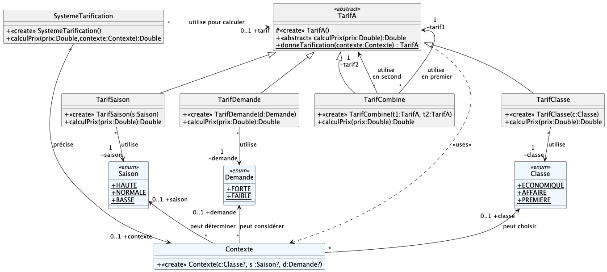
Composite : recettes de cocktails (TP7, exercice 2)
Patterns : Composite, avec imbrication récursive.
Composite : un Cocktail est lui-même un Ingredient : il contient des ingrédients basiques et d'autres cocktails (le Mojito contient le Virgin mojito, qui contient le Soda Mix).
Application contient les cocktails de la carte.
Diagramme UML
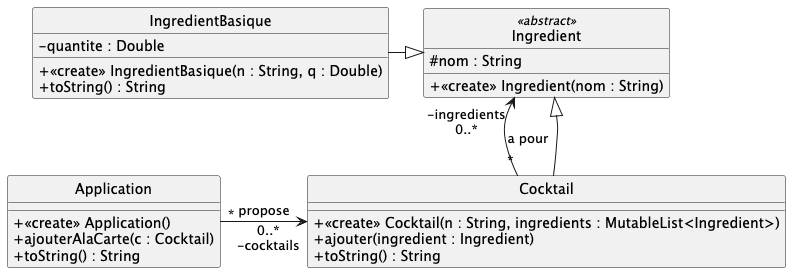
Classe abstraite + Stratégie + Itérateur : tables de hachage (TP9)
Patterns : Classe abstraite, Stratégie, Itérateur et composition, combinés.
Classe abstraite :HashtableA fixe la taille, la fonction de hachage et index() ; SimpleHashtable (collision = CollisionException) et Hashtable (chaînage externe, tableau de listes) en héritent.
Stratégie : la fonction de hachage hash : E -> Int est passée au constructeur et peut être remplacée.
Itérateur :IHashtable est Iterable ; chaque table fournit son itérateur sans reconstruire de liste.
Composition :MySet (interface ISet) stocke ses éléments dans la table de hachage pour détecter les doublons.
Diagramme UML
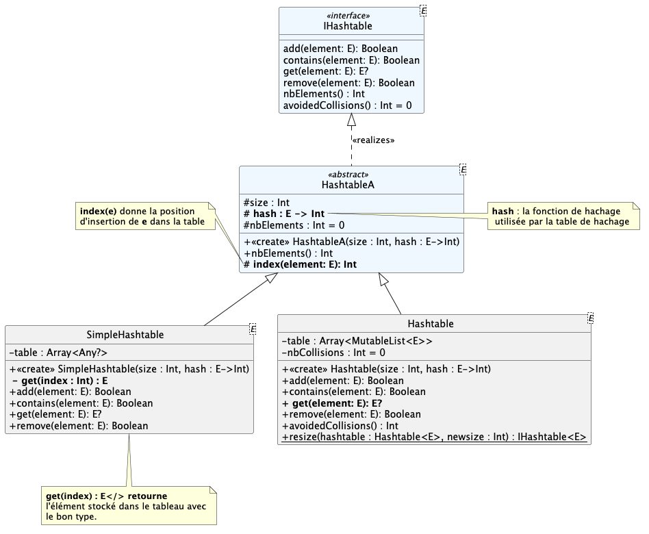
Itérateur + deux implémentations de File (TP1)
Patterns : Itérateur et implémentations interchangeables.
File<E> réalise Iterable<E> ; FileChainee (cellules) et FileArrayList (MutableList) en sont deux implémentations interchangeables.
Itérateur :CelluleIterator réalise Iterator<E> et garde la cellule courante (Cellule<E>?).
Diagramme UML
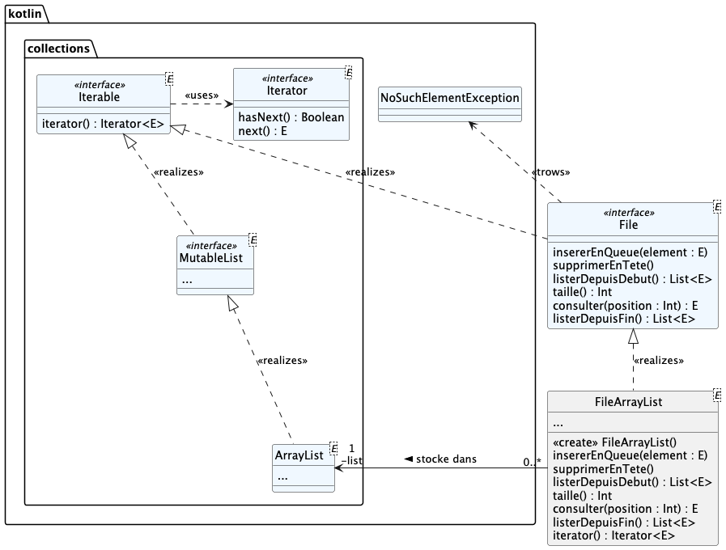
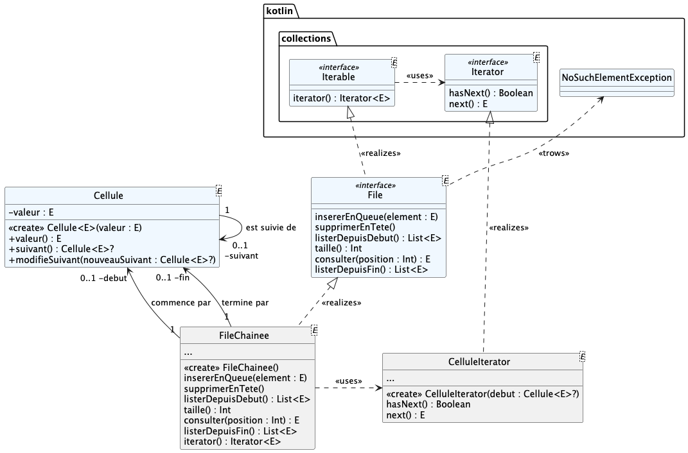
Synthèse
Pattern
Famille
Rôle principal
Fabrique
Création
Choisir la classe à instancier
Singleton
Création
Une seule instance
DAO
Structurel
Isoler l'accès aux données
Patron de méthode
Comportemental
Squelette d'algorithme à compléter
Stratégie
Comportemental
Algorithmes interchangeables
Itérateur
Comportemental
Parcourir sans exposer la structure
Observateur
Comportemental
Notifier les changements d'état
Composite
Structurel
Traiter feuilles et conteneurs de la même façon
Délégation
Structurel
Confier un traitement à un autre objet
Adaptateur
Structurel
Rendre une interface compatible
Repository
Structurel
Abstraire le stockage des objets
MVC
Architecture
Séparer données, affichage et actions
Design pattern
Solution générique et réutilisable à un problème de conception récurrent, indépendante du langage.
Problème récurrent
Une situation qui revient dans de nombreux projets : créer des objets, changer un algorithme, notifier des objets, etc.
Instanciation
Création d'un objet à partir d'une classe, par exemple avec Chien("Rogue").
Sous-classe
Classe qui hérite d'une autre classe (la super-classe) et en reprend les membres.
Classe métier
Classe qui porte les règles de l'application (calcul de TVA, gestion des notes), sans se soucier du stockage.
Base de données (BDD)
Système qui stocke les données de façon persistante : fichiers, SQL, etc.
Squelette d'algorithme
La suite des étapes d'un algorithme, fixée dans la classe mère. Les sous-classes ne complètent que certaines étapes.
Méthode abstraite
Méthode déclarée sans implémentation (abstract). Toute sous-classe concrète doit la redéfinir.
Algorithme
Suite d'instructions qui résout un problème. Ici, une manière de calculer un résultat.
Interface
Ensemble de signatures de méthodes qu'une classe s'engage à implémenter. Elle dit quoi faire, pas comment.
Iterable
Interface Kotlin pour les collections parcourables. Elle fournit la méthode iterator().
Parcours séquentiel
Parcours élément par élément, dans un ordre donné, sans accès direct à la position.
Observateur
Objet qui souhaite être prévenu d'un changement. Dans l'exemple, c'est une fonction passée en paramètre.
État
Ensemble des valeurs des attributs d'un objet à un instant donné.
Structure arborescente
Organisation hiérarchique : un conteneur peut contenir des éléments, qui peuvent eux-mêmes être des conteneurs.
Composition
Un objet possède un autre objet comme attribut. Contrairement à l'héritage, le lien se fait à l'exécution.
Injection de dépendances
L'objet dont on a besoin est fourni de l'extérieur (au constructeur). On peut alors le remplacer par un mock pour les tests.
Abstraction
Cacher les détails d'implémentation derrière une interface simple à utiliser.
Architecture logicielle
Organisation globale d'une application en grandes parties (couches, modules), à un niveau plus large que les classes.